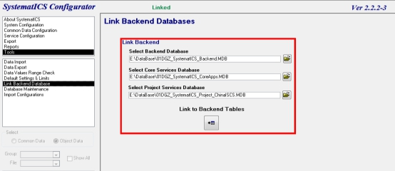
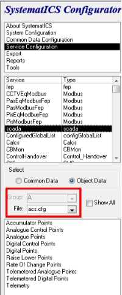
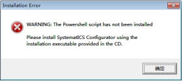
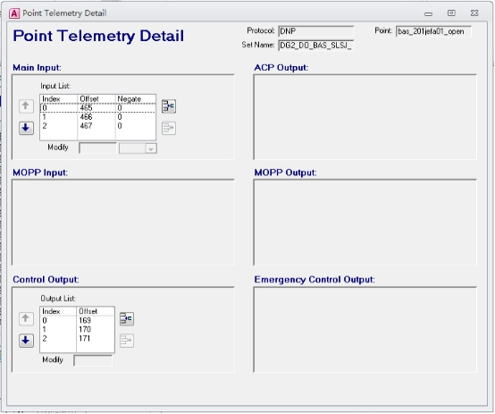
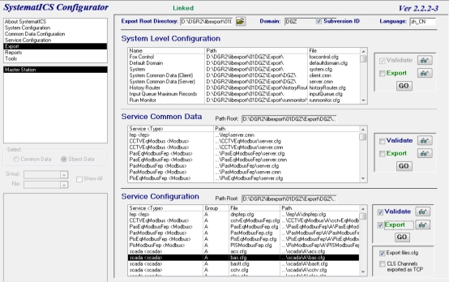

1.1点击设备后显示的设备选项卡或者报警记录及报文内事件记录的描述不正确；
1.2新增设备，含BAS、FAS、ACS、AFC等由FEP处理的专业，不含ATS、PA、PIS等由服务器直接处理的系统专业；
1.3点位错误，导致设备显示异常或者无法控制。
2.1修改数据库前在外网更新最新的版本库，数据库文件保持为最新状态；
2.2修改完且验证无误后，需第一时间将数据库上传至外网数据库内；
2.3修改流程及步骤需严格参照本教程进行。
3.1笔记本（预装SystematICS_Configurator 2.2.2-3、Office Access以及FileZilla Client）；
以下将用##代替具体站名称$$代替站点编号，例如东莞火车站，则##代表DGZ，$$代表01。具体车站对应缩写表请参见附件1。综合监控数据库文件共4个，以东莞站为例，则分别为”01DGZ_SystematICS_Backend”、”01DGZ_SystematICS_Configurator”、”01DGZ_SystematICS_CoreApps”、”01DGZ_SystematICS_Project_ChinaISCS”，其中后缀为configurator的为主文件。
4.1打开并配置$$##_SystematICS_Configurator文件
打开文件后点选左侧Tools→Link Backend Database，打开界面如下图所示：

在右侧的红色区域内查看对应路径是否正确，第一个地址栏内指向文件应为Backend.MDB，第二个地址栏内指向文件应为CoreApps.MDB，第三个地址栏内指向文件应为Project_ChinaISCS.MDB。最后点击红框内”Link to Backend Tables”下方的按钮进行加载。如果打开过程中如发生报警提示，确定即可，如下图所示；

4.2在左侧选择”Export” →”Master Station”导出文件。在界面下方的”Service Configuration”中，选择”bas.cfg”。在右侧对应位置，勾上”Validate”。确认完毕后，”GO”。将会生成一个自检文件，将其拷贝出其他任意路径即可。
4.3修改数据库内点位及描述
依次点选”Service Configuration”→”scada”→在红色复选框内选择对应专业，如下图所示；
在红框下方各选项内的各选项内有此专业的各类型点位，如数字量状态点、控制点，模拟量控制点状态点等，可以根据所需进行修改定义。下面将以修改BAS系统内隧道风机控制点位为例进行操作步骤的详细说明。
4.4在左侧选择”Service Configuration” →”scada”。在File内，选择编辑的系统（bas.cfg）。在下方选择”Diital Control Points”（设备控制点），点选查看相应设备点。在右下侧”Telemetry”选项卡中的”Telemetry Details”，严格根据点表修改其中的点位，如下图所示。

4.5修改完毕后，按”ctrl+S”进行保存。在左侧选择”Export” →”Master Station”导出文件。在界面下方的”Service Configuration”中，选择”bas.cfg”。在右侧对应位置，勾上”Validate”和”Export”。确认完毕后，”GO”。如下图所示：

之后会生成一个bas.cfg配置文件以及显示一个自检报告，与步骤（2）中拷贝出来的自检报告对比，无新增告警信息即可。如有，则需根据新增报警信息进行排查修改，排除告警之后方可进行下一步操作。
4.6连接交换机，设置本地IP地址
此项为基础操作，不做展开说明。
4.7使用filezilla软件上传配置文件
将步骤（5）生成的bas.cfg文件上传至服务器内，在本地站点选择的路径：“D：\DGR2\libexport\$$##\Export\##\scada\A\”，而远程站点的路径：“/tmp”。在本地文件下找到“bas.cfg”，右击选择“上传”。上传完毕后，连接2号服务器，再使用相同步骤流程进行上传。
4.8将存放在/tmp下的*.cfg文件拷贝至对应目录
分别登录1、2号服务器，执行以下指令
$cd /opt/scada/var/##/scada/A
$sudo mv bas.cfg /opt/scada/var/##/scada/A/bas.cfg.xx(xx为当前修改日期)
$sudo cp /tmp/bas.cfg /opt/scada/var/##/scada/A
4.9执行更新数据库指令
在工作站上 “System State”界面上查看scada是哪台服务器值班的，如在1号服务器的，则登录服务器输入以下指令：“/opt/scada/bin/oilcmd /##/scada/A/ LoadConfiguration”（重启scada）
4.10验证
点控测试修改后的设备，如果条件允许，可现场动作，观察是否修改成功。
注意：
①如果更新不成功，则再执行步骤（9）的指令，如果还不成功，则使用rm命令删除1、2号服务器上/opt/scada/var/##/scada/A/下方”*SIG*”文件夹，然后在工作站上手动重启scada服务即可。
②如果更新成功，但更新后的内未曾达到目的，则需按步骤（11）还原数据库至修改前的状态。
4.11回退步骤
如果修改不成功，且当场无法判断出问题及故障点在何处，则需在作业时间范围内对数据库进行回退操作，还原至作业前状态。操作步骤如下：
$cd /opt/scada/var/##/scada/A
$sudo mv bas.cfg.xx bas.cfg（”bas.cfg.xx”为步骤8中所备份的文件）
此步骤与上文步骤（9）至（10）操作一致。